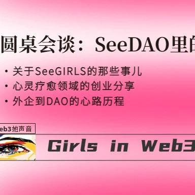

圆桌会谈 | SeeDAO里的Barbie们
作者: Suzie
分类:
SeeGIRLS, SeeDAO
换句话讲，也许不是Web3赚不到钱，而是赚钱的方式变了，大家还没有去习惯这种新的盈利的方式，所以我们就看不到所谓“传统”的盈利。

SaiSai
我的机缘是在和Life Coach讨论到我的人生使命是为世界带来快乐之后，TA给我提出了Web3这个概念，经过一番调查，我决定先从华语DAO入手，然后就顺理成章加入了SeeDAO。我发现自己很容易闭门造车，很需要同伴，所以就来到了这里。
Chelsea
我进入web3的契机其实是一个长故事了，有分这样几个阶段——
我的第一份工作是在悉尼的一个币交所，出于工作需求我开始接触和了解Web3。当时我对这个领域可以说是毫无兴趣，伴随着各种币的上锁和沟通对接，我越发觉得这又是一个混乱且无组织的金融游戏。
转变发生在2021 年，那个时候我跟几个朋友一起深入玩了一个基于Minecraft的NFT游戏。在那里我挖掘了许多Web3的新玩法，我很惊奇的发现原来这个领域不只有炒币。后来，通过深入探索，我们的团队也开始考虑做一个自己的社区项目。
我是很随机性的进入了Web3，其实过去10年我一直在做Fintech，但由于各种阴差阳错吧，错过了 Crypto 和 Blockchain 的这一波。虽然我之前在悉尼也是做Fintech的，但更偏向于大数据和Machine Learning有关的产品，所以Web3就一直都不在我的视野里。很机缘巧合的是去年我认识了一个人，TA说自己在做一个DAO，问我有没有兴趣来做基础设施payment这一块，从此帮我打开了Web3的大门。其实我一直都很想进入Web3，但苦于没有门路。说到这很多人应该都有同感——Web2和Web3中间像是有一道门，大多数人很难找到一个合适的入口，所以SeeDAO就成了我进入 Web3的一个非常好的入口。SaiSai
我先来说机遇，其实我在参加第三期新手营前，对DAO和Web3可谓是一无所知。在这个过程中，我发现SeeDAO里已经有很多觉醒的人，TA们不仅有技术去实现想法，同时也有在关注身心灵的健康和成长。越来越多的人聚在一起去寻找和追求人生的使命，在我看来这是一个机遇。而且，在SeeDAO里会有人在默默围观你做的事情，项目有进展后TA们会选择加入来产生一种链接，这在现实生活中是很难遇到的。
挑战可能是时间和精力吧，特别对于web2仍有工作的小伙伴来说，SeeDAO里还是有很多会议需要开的。另一个点是，如果把一些非 web3行业的兴趣带进来的话，可能也会受到一些质疑。
Chelsea
我觉得最大的机遇和挑战都来自于这个圈子的“新”。很多在SeeDAO的小伙伴或许都有同感，如果你想在圈内去链接某个大佬，相对来说是更容易的。因为这个新圈子还处于早期阶段，当你真诚的去表达想法时，很多人是愿意伸出援手的，这就是机遇。那么挑战也出于“新”，由于太新，我们都意识到这个技术短期内很难被广泛应用，仍有很多阻碍。
这是把双刃剑，圈子的发展速度过快，也是带来机遇和挑战的一个面。大家应该也能体会到，一周内Crypto圈里发生的新词新事，根本看不过来，很多事情可能就发生在一天内。如此快的发展速度也导致了圈内的信息差很大，普通人要比核心圈子晚1-2周得到消息，这也是TA飞速发展的写照，同时也给我带来一种挑战和机遇并存的感觉。
最近的两个热点问题，一个是卷，另一个就是裁员，疫情原因导致很多企业在用人上有很大的缩减。这是为什么呢？其实是因为 Web2领域是一个非常饱和的状态。TA走过了快速发展的阶段，进入到瓶颈期，这种现象其实是必然结果。下一轮的蓄势一定是在Web3里的，不论是经济层面还是行业层面。我一直都持这样一个观点，这是一个很大的市场，因为它的底层技术和组织结构会改变很多行业，这也是我一直想进入Web3的重要原因。所以，只要大家坚持这个理念和持续学习，其实在这个行业里找到自己的一席之地，并不困难。SaiSai
我最开始先报名了队伍的队长，这不仅有利于和大家互相监督，也更容易和老 OG 对接。如此一来你就有机会接触到更多的人，更直接的收获一些项目的指导。
第二点，把自己的愿望提出来。不仅要找到志同道合的人，也需要尽可能清晰的把愿望表达出来，这一点很重要。
第三点．现在新手营有许多有意思的的共学项目，大家也可以关注一下。有机会在那里找到一群同频的人，一起玩耍和共创。
我认为一切的核心点全都围绕着“信息”展开，本质问题还是“信息差”。我最大的建议就是利用SeeDAO平台去结识人脉和扩充信息，这是一个能让你快速获得正确信息和方式的地方。所以有问题就尽管问，然后去链接对的人，这是SeeDAO给大家提供的一个绝佳机会。SeeeDAO其实就是一个非常好的入门渠道。首先，这里的生态很好。其次，我们花费了很多精力在“如何能让大家 onboarding 到这样好的生态中去”，SeeDAO在全球的许多地区都有开展线下活动，所以大家也可以通过这些渠道参与进来，了解更多Web3信息。另一点，需要找到一个合适自己的位置。因为我觉得在任何一个组织里，能找到志同道合的人的这种兴奋感，才是让你长久留在生态里的重要因素，所以持续的待在这个环境里是很重要的。因此，从周一到周五一我们组织了各种活动，大家可以找自己感兴趣的去参加。当你迈出了第一步时，你会发现圈子里有各式各样的人，你能在这里找到志同道合的伙伴，然后一起去做你们想做的事。从我的视角看，DAO就好似一个乐高世界，你可以是显眼的小人仔，也可以是2*2的小块砖。这就是DAO和公司最大的不同，旨在充分挖掘个人潜力，而不是把你的某个技能压榨到底。SaiSai
首先，我认为最重要的是要在DAO内积累声誉。其次，需要不停地去输入和输出。输入的话可以查阅官网和公众号。输出就是把自己感兴趣的东西给做出来。举个最简单的例子，你可以在加入新手营时把个人帖写得更清晰一点，让大家主动去链接你。
这一切更多的是自发性的，我自己很认可的一套逻辑是“能量=金钱”。关于DAO里到底能不能赚钱这个问题，我觉得见仁见智。不过如果能在这里获得一项非常硬的技能，不管是软技能还是硬技能，那它能从现实生活中获得的经济和声誉回报本身就是无限的。
在我看来，目前我们看到DAO赚钱是有的，但很难复制，而且每个DAO的形式也是非常不一样的。比如 SeeDAO就非常的以人为本，非常重社交，TA是通过人和人之间的链接而产生出来的一些输出，这种东西又非常难量化，很难复制，然后大家都在拼了命的去尝试。其实我觉得这是非常必要的，这是历史性的一步跨越。关于如何持久赚钱这件事，如果让哲学家来看或许也能讲出五花八门的道理，其实这是个很难的问题。举个例子，SeeGIRLS严格意义上来讲是一个大家一起做事的组织，但让这个组织能够持久的运行下去也不算容易。所以我们下一步的方向——尽量分出一个部门去尝试盈利。这是比较简单的一个设想，SeeDAO也是同理。那么，这个盈利的部门就有可能去带动其它组织运转，再配合一个比较完美的治理模型，不知道会不会work，但我们会去尝试。总之，我认为这一切还处在一种很早期的阶段，大家都还在挤破了头去思考和尝试我们该如何持续，这个过程本身就非常美妙了，我觉得这是历史性的一步。我想换一个视角去看待这个问题，大家都说赚不到钱，那么“钱”到底是什么呢？其实比特币某种程度上已经改变了大家对钱的看法，这也可以看作是一种潜质，Web3的赚钱方式和传统行业是不一样的。换句话讲，也许不是Web3赚不到钱，而是赚钱的方式变了，大家还没有去习惯这种新的盈利的方式，所以我们就看不到所谓“传统”的盈利。内容来源｜Suzie
设计排版｜Suzie
审核｜Ines